个人简介： wedo实验君, 数据分析师；热爱生活，热爱写作
GPU利用率低：模型训练时GPU显存沾满了，但是GPU的利用率比较不稳定，有时候0%，有时候90%，忽高忽低。
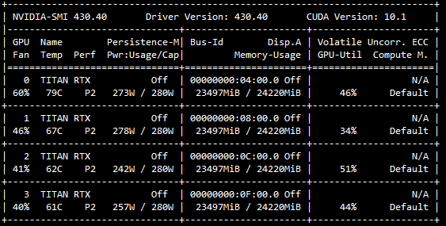
训练的数据量大：训练数据大，在百万/千万的量级，训练一个Epoch需要很长时间，模型迭代周期过长。
GPU利用率低, 主要原因是CPU处理的效率跟不上GPU
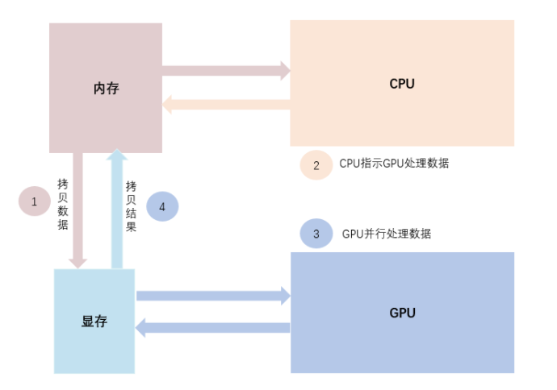
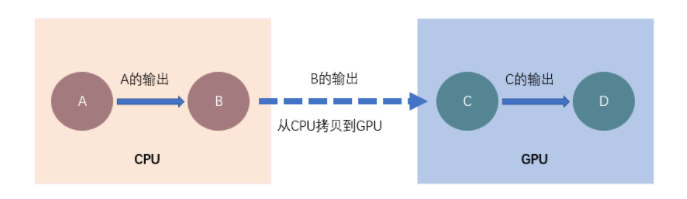
采用多进程并行处理，加快CPU加载数据的性能
workers use_multiprocessing来采用多进程方式，并行处理数据，并push到队列中，共GPU模型训练。因为进程之间可能相互影响资源，并不是越大越好，workers可以设置2，4，8。run_model.fit_generator(
generator=training_generator,
class_weight={0: config.weights, 1: 1},
epochs=epochs,
verbose=1,
steps_per_epoch=steps_per_epoch,
callbacks=callbacks_list,
validation_data=valid_generator,
validation_steps=validation_steps,
shuffle=True,
workers=8,
use_multiprocessing=True,
max_queue_size=20
num_workers。pin_memory=True可以直接加载到显存中，而不需要内存torch.utils.data.DataLoader(image_datasets[x],
batch_size=batch_size,
shuffle=True,
num_workers=8,
pin_memory=True)
当训练的数据量很大时，可以通过多个机器多个GPU来提高训练的效率。不同于hadoop和spark等分布式数据处理框架，深度学习训练因为要涉及参数的前项传播和反向传播，有两种并行方式：
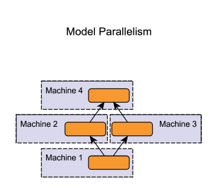
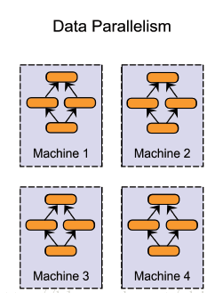（图片来自网络）
Facebook在《Accurate, Large Minibatch SGD: Training ImageNet in 1 Hour》介绍了使用 256 块 GPU 进行 ResNet-50 网络「数据并行」训练的方法
参数服务器模式，见下图。在每个worker执行完一个batch的训练后，反向传播参数的时候，所有的worker都会把参数传给参数服务器，进行汇总求均值，之后再传给每个worker，进入第二个batch的训练。（图片来自网络） 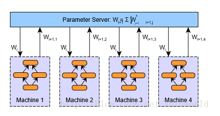
参数服务器有一个或者多个的结构模式，可以看出这种数据并行的模式效率是否提升取决于参数服务器与worker之间的通信效率，也就是最慢的worker的训练时间和参数服务器的接收和更新参数后再回传的时间。worker数量多的话，参数服务器可能存在瓶颈。（图片来自网络）
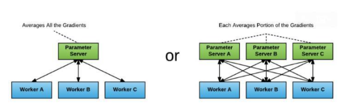
百度提出的ring-reduce摒弃了参数服务器，采用环状结构来更新参数。ring-reduce把所有的worker组成一个两两相邻的环形结构。每个worker只与相邻的worker交换参数。经过几次交换之后，所有的worker都包含其他worker的参数信息，达到更新的目的。（图片来自网络）
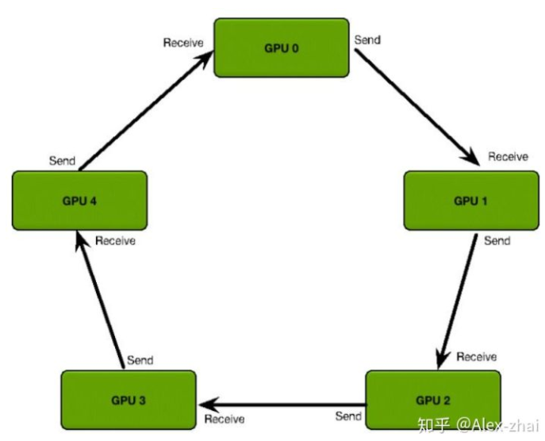
下面几张图，可以看到其中的几个步骤； ring-reduce为了加快速度，并不是一次性交换所有的参数；而是先把参数进行分割，不断交换分割后参数。
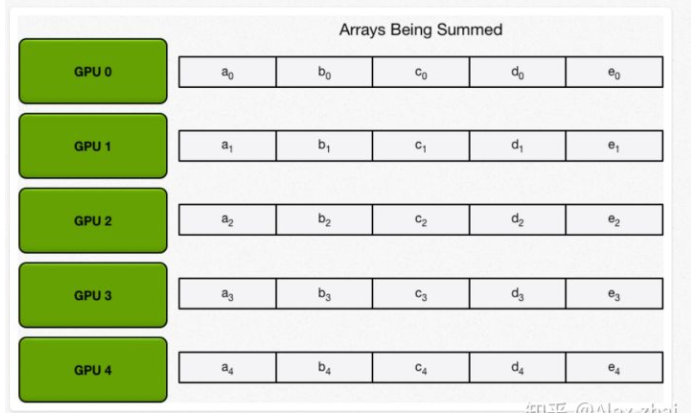
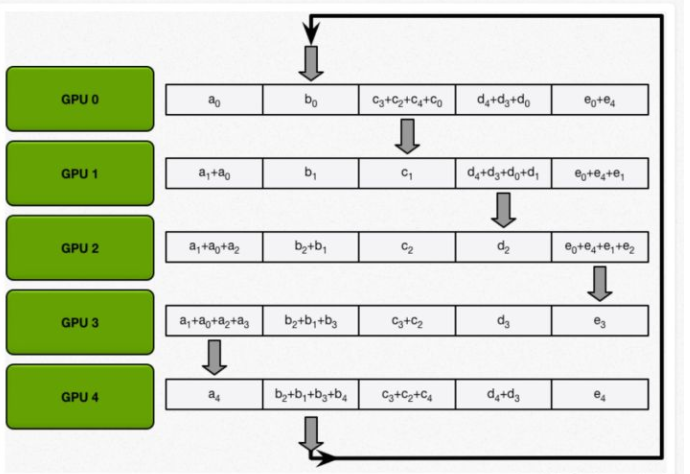
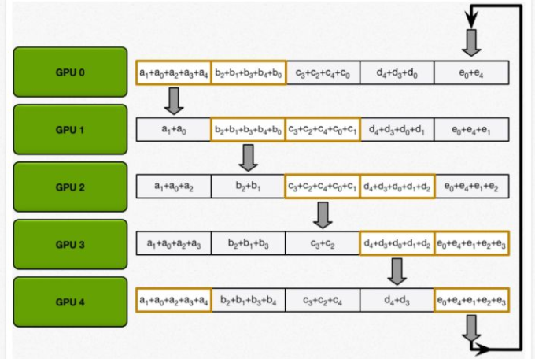
Horovod 是 Uber 开源的又一个深度学习工具，它的发展吸取了 Facebook「一小时训练 ImageNet 论文」与百度 Ring Allreduce 的优点，可为用户实现分布式训练提供帮助。https://github.com/horovod/horovod
采用NCCL 替换百度的 ring-allreduce 实现。NCCL 是英伟达的集合通信库，提供高度优化的 ring-allreduce 版本。NCCL 2 允许在多个机器之间运行 ring-allreduc。
如果要把单机的训练代码修改成分布式的代码，只要几个步骤就可以了 改造分布式训练：
horovod安装
建议安装docker的horovod，省去安装环境的麻烦。horovod依赖NCCL 2 open MPI
$ mkdir horovod-docker-gpu
$ wget -O horovod-docker-gpu/Dockerfile https://raw.githubusercontent.com/horovod/horovod/master/Dockerfile.gpu
$ docker build -t horovod:latest horovod-docker-gpu
机器worker机器之间ssh打通
修改训练代码
horovod支持tf,keras,pytorch和mxnet等不同的深度学习框架。以keras为例，修改主要6个步骤
（1） 初始化：hvd.init()
（2）分配GPU计算资源：config.gpu_options.visible_device_list = str(hvd.local_rank())
（3）分布式的优化器来实现参数的分布式更新：opt = hvd.DistributedOptimizer(opt)
（4）定义所有worker模型初始化一致性 hvd.callbacks.BroadcastGlobalVariablesCallback(0)
（5）模型保存在某一个worker
from __future__ import print_function
import keras
from keras.datasets import mnist
from keras.models import Sequential
from keras.layers import Dense, Dropout, Flatten
from keras.layers import Conv2D, MaxPooling2D
from keras import backend as K
import math
import tensorflow as tf
import horovod.keras as hvd
# Horovod: initialize Horovod.
hvd.init()
# Horovod: pin GPU to be used to process local rank (one GPU per process)
config = tf.ConfigProto()
config.gpu_options.allow_growth = True
config.gpu_options.visible_device_list = str(hvd.local_rank())
K.set_session(tf.Session(config=config))
batch_size = 128
num_classes = 10
# Horovod: adjust number of epochs based on number of GPUs.
epochs = int(math.ceil(12.0 / hvd.size()))
# Input image dimensions
img_rows, img_cols = 28, 28
# The data, shuffled and split between train and test sets
(x_train, y_train), (x_test, y_test) = mnist.load_data()
if K.image_data_format() == 'channels_first':
x_train = x_train.reshape(x_train.shape[0], 1, img_rows, img_cols)
x_test = x_test.reshape(x_test.shape[0], 1, img_rows, img_cols)
input_shape = (1, img_rows, img_cols)
else:
x_train = x_train.reshape(x_train.shape[0], img_rows, img_cols, 1)
x_test = x_test.reshape(x_test.shape[0], img_rows, img_cols, 1)
input_shape = (img_rows, img_cols, 1)
x_train = x_train.astype('float32')
x_test = x_test.astype('float32')
x_train /= 255
x_test /= 255
print('x_train shape:', x_train.shape)
print(x_train.shape[0], 'train samples')
print(x_test.shape[0], 'test samples')
# Convert class vectors to binary class matrices
y_train = keras.utils.to_categorical(y_train, num_classes)
y_test = keras.utils.to_categorical(y_test, num_classes)
model = Sequential()
model.add(Conv2D(32, kernel_size=(3, 3),
activation='relu',
input_shape=input_shape))
model.add(Conv2D(64, (3, 3), activation='relu'))
model.add(MaxPooling2D(pool_size=(2, 2)))
model.add(Dropout(0.25))
model.add(Flatten())
model.add(Dense(128, activation='relu'))
model.add(Dropout(0.5))
model.add(Dense(num_classes, activation='softmax'))
# Horovod: adjust learning rate based on number of GPUs.
opt = keras.optimizers.Adadelta(1.0 * hvd.size())
# Horovod: add Horovod Distributed Optimizer.
opt = hvd.DistributedOptimizer(opt)
model.compile(loss=keras.losses.categorical_crossentropy,
optimizer=opt,
metrics=['accuracy'])
callbacks = [
# Horovod: broadcast initial variable states from rank 0 to all other processes.
# This is necessary to ensure consistent initialization of all workers when
# training is started with random weights or restored from a checkpoint.
hvd.callbacks.BroadcastGlobalVariablesCallback(0),
]
# Horovod: save checkpoints only on worker 0 to prevent other workers from corrupting them.
if hvd.rank() == 0:
callbacks.append(keras.callbacks.ModelCheckpoint('./checkpoint-{epoch}.h5'))
model.fit(x_train, y_train,
batch_size=batch_size,
callbacks=callbacks,
epochs=epochs,
verbose=1,
validation_data=(x_test, y_test))
score = model.evaluate(x_test, y_test, verbose=0)
print('Test loss:', score[0])
print('Test accuracy:', score[1])
利用horovodrun 执行分布式训练
horovodrun -np 16 -H server1:4,server2:4,server3:4,server4:4 python train.py
本文分享了通过GPU利用率和分布式训练Horovod框架来提升深度学习训练。